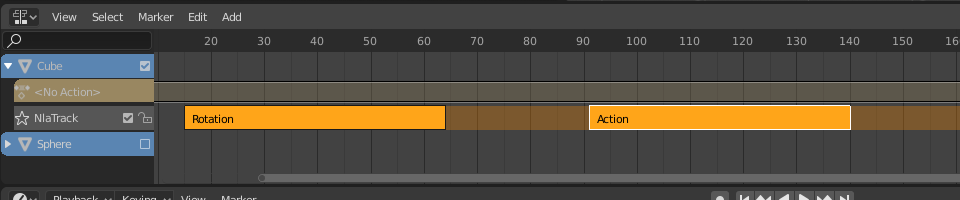

Strips¶
Types¶
There are four kinds of strips: Action, Transition, Sound clip and Meta.
Action Strips¶
An Action Strip is a container of keyframe data of an action. Any action used by the NLA first must be turned into an Action strip. This is done so by clicking the Push Down action button see above. Alternatively, you can go to .
Transition Strips¶
Transitions interpolate between Actions. They must be placed in between other strips. Select two or more strips on the same track, and go to .
Transition Strip.
Sound Clip Strips¶
Controls when a speaker plays a sound clip. .
Meta Strips¶
Meta strips group strips together as a whole, so you can move them as one. If you find yourself moving a lot of strips together, you can group them into a Meta strip. A Meta strip can be moved and duplicated like a normal strip.
Reference
| Menu: | |
|---|---|
| Hotkey: | Shift-G |

Shift-select two or more strips. |

Combine them into a meta strip. |
{kind=link}
A Meta strip still contains the underlying strips. You can ungroup a Meta strip.
Reference
| Menu: | |
|---|---|
| Hotkey: | Alt-G |
Editing¶
Start Tweaking Strips Action¶
Reference
| Menu: | |
|---|---|
| Hotkey: | Tab |
The contents of Action strips can be edited, but you must be in Tweak Mode to do so. The keyframes of the action can then be edited in the Dope Sheet.

Strip in Tweak mode. |
{kind=link}
When you finished editing the strip, simply go to or press Tab.
Start Editing Stashed Action¶
Reference
| Menu: | |
|---|---|
| Hotkey: | Shift-Tab |
It will enter and exit Tweak Mode as usual, but will also make sure that the action can be edited in isolation (by flagging the NLA track that the action strip comes from as being “solo”). This is useful for editing stashed actions, without the rest of the NLA Stack interfering.
Duplicate¶
Reference
| Menu: | |
|---|---|
| Hotkey: | Shift-D |
Creates a new instance of the selected strips with a copy of the action.
Linked Duplicate¶
Reference
| Menu: | |
|---|---|
| Hotkey: | Alt-D |
The contents of one Action strip can be instanced multiple times. To instance another strip, select a strip, go to . It will uses the same action as the selected strips.
Now, when any strip is tweaked, the others will change too. If a strip other than the original is tweaked, the original will turn to red.

Linked duplicated strip being edited.
Make Single User¶
Reference
| Menu: | |
|---|---|
| Hotkey: | U |
This tool ensures that none of the selected strips use an action which is also used by any other strips.